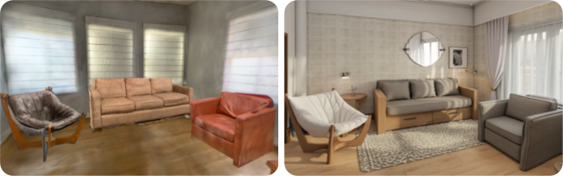

Edit
Objects can be edited with voice and natural languge instructions. A 2D image preview and spatial annotation is shown after choosing a varient.
We present an immersive VR editor for generating and editing 3D gaussian splatting scenes and a workflow for composing scenes for generative images and videos.
Authoring 3D scenes is a central task for spatial computing applications. Competing visions for lowering existing barriers are (1) focus on immersive, direct manipulation of 3D content or (2) leverage AI techniques that capture real scenes (3D Radiance Fields such as, NeRFs, 3D Gaussian Splatting) and modify them at a higher level of abstraction, at the cost of high latency. We unify the complementary strengths of these approaches and investigate how to integrate generative AI advances into real-time, immersive 3D Radiance Field editing. We introduce Dreamcrafter, a VR-based 3D scene editing system that: (1) provides a modular architecture to integrate generative AI algorithms; (2) combines different levels of control for creating objects, including natural language and direct manipulation; and (3) introduces proxy representations that support interaction during high-latency operations. We contribute empirical findings on control preferences and discuss how generative AI interfaces beyond text input enhance creativity in scene editing and world building.
Objects can be edited with voice and natural languge instructions. A 2D image preview and spatial annotation is shown after choosing a varient.
New objects can be generated via prompting. Users can select from 3 variant generations and a 2D image preview is shown.
For finer control, new objects can be generated via sculpting. Users arrange basic primitives and use ControlNet to stylize into a realistic object.
After editing, full fidelity objects are created and edited in an offline process, replacing the proxy representations in the scene.
The Magic Camera allows users to position a virtual camera within a scene and apply stylization based on prompts using the ControlNet module, similar to rendering a frame in 3D editors. This stylized output can be used as input for image-to-video or image-to-3D models, enabling an iterative design process for creating and editing 3D scenes in Dreamcrafter. The system serves as a tool for spatial prompting, allowing users to create, stage, and stylize scenes using low fidelity objects in a VR interface, and explore high fidelity 3D scene generation through video diffusion models. Dreamcrafter's capabilities could further enhance generative AI design systems for 2D, video, and 3D outputs for world building.

Magic Camera Input and Output
"realistic apartment living room"
Image-to-Video Generation
If you find our work helpful, please consider citing our paper.
@inproceedings{vachha2025dreamcrafter,
author = {Vachha, Cyrus and Kang, Yixiao and Dive, Zach and Chidambaram, Ashwat and Gupta, Anik and Jun, Eunice and Hartmann, Bj\"{o}rn},
title = {Dreamcrafter: Immersive Editing of 3D Radiance Fields Through Flexible, Generative Inputs and Outputs},
year = {2025},
publisher = {Association for Computing Machinery},
doi = {10.1145/3706598.3714312},
url = {https://doi.org/10.1145/3706598.3714312},
booktitle = {Proceedings of the 2025 CHI Conference on Human Factors in Computing Systems},
series = {CHI '25}
}